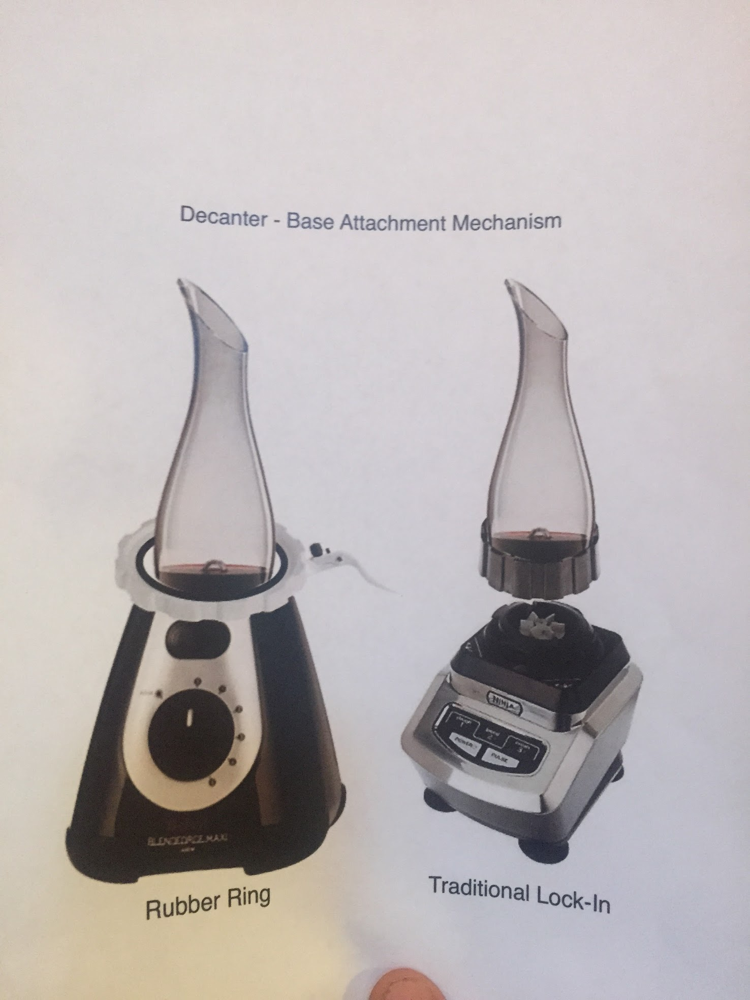
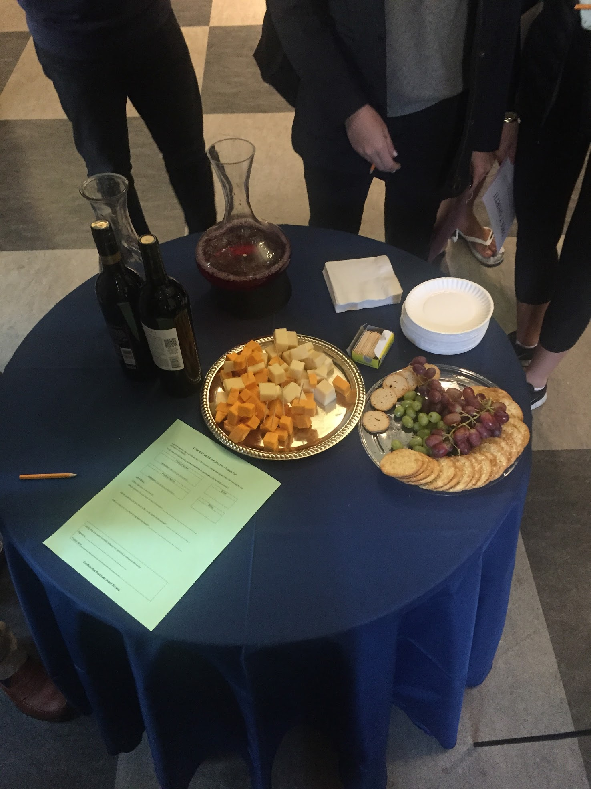
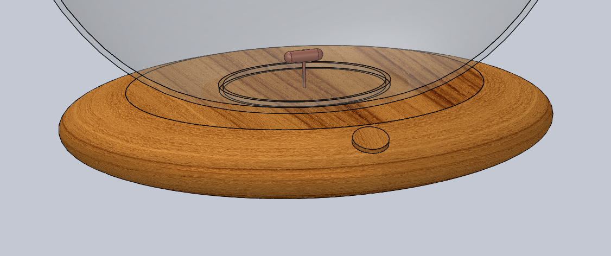
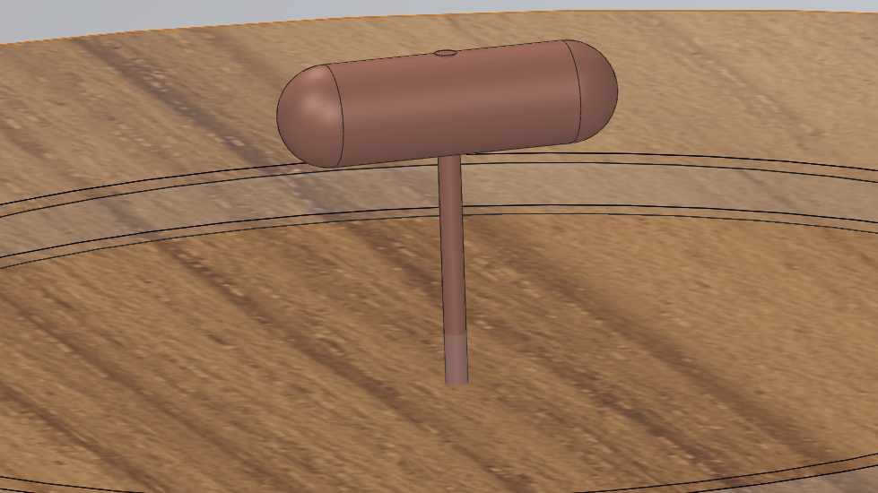
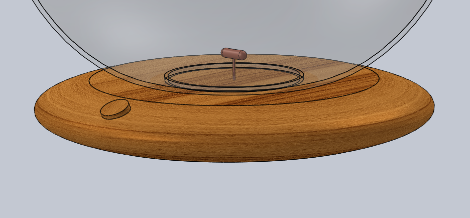
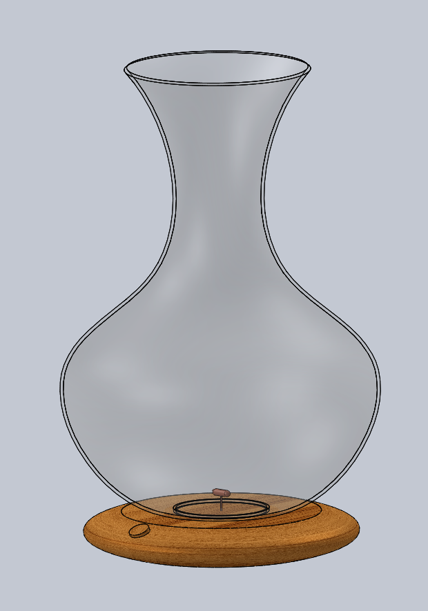

Vino Vortex
Project for OPIM 415

Vino Vortex
Wine Aerator Concept
Idea: Make a new wine aerator
Concept: A high class wine aerator that aerates better than any other product
Problems: How do we aerate better than other pre-existing products? How do we create a product that fits in with the behaviors of drinking wine
Basic Design: I started off by creating a mapping of all existing aerating options. The product offerings included items like the Vinturi wine aerator and traditional decanters.


After looking at all available options, I concluded that these were all preexisting wine aerating products; however, I learned from a teammate of mine that blending was actually the best method for aerating wine, popularized by the former Microsoft CTO Nathan Myhrvold. If the pre-existing products were already the most sleek, we figured out our design must have the best performance, leading us to conceptualize products using this technique. The only difficulty though, was that when asked if people felt comfortable blending their wine, even those who dubbed themselves as aerating proponents could not understand the thought of putting wine in a blender. Thus, our first idea, a "blend" of the traditional decanter and blender was scrapped.

I spent my time focusing on how to "blend" the traditional behaviors of drinking wine with this novel technique. I considered all use cases of wine from those enjoying a glass by themselves, to dinner parties, restaurants, and events. I determined the blending would have to be subtle. Seeing a blender would mean the product might receive poor adoption, and hearing a blender could only add to this. I considered any methods that might take the appearance of existing aerators such as those which appeared as bottle toppers.

Pouring through such a device could initiate the blending through a liquid sensor. I thought this might work. I pitched it to my team, but they were not as fond of it as our original mockup of the decanter-blender. They thought it might be difficult to clean. I started to continue thinking using the restaurant atmosphere as my conceptual acid test. If it could make sense there, it could make sense anywhere.
One of the benefits of the blending technique is that it is fast. Using the restaurant scene as my conceptual acid test, it made me first believe that decanters would not be the best form for my idea. I moved forward with bottle toppers. I considered a bottle topper which might have a long arm extending into the bottle like a blender. It would be easier to clean, and be inconspicuous to the drinker. I pitched it and it sufficed. However, That same day, I began to think of my love of magnets and I sprung up a new idea akin to lab stirrers.

It would necessitate some sort of magnetic base to pull the magnetic pill within. I thought it was perfect until I realized that a floating pill could easily be swallowed, creating a liability for us as designers. The pill would have to be attached to the container holding the wine. This threw out any possibility of using a bottle, as attaching a pill to each bottle after opening would be far too difficult. Swapping the traditional bottle for a decanter, we developed our final product and built a prototype.
The prototype worked perfectly and featured a variable speed spinner. One could take the decanter off at any time to pour, and the moment it was replaced, the pill began tracking with the base to continue stirring. We ended up receiving 2nd place at our product design fair, which I believed was very successful considering voters were of college age, and may not be experienced wine drinkers.
Final Renders

The contactless base with the magnetic spinning mechanism

The magnetic spinning mechanism

A separate angle of the base

The entire assembly